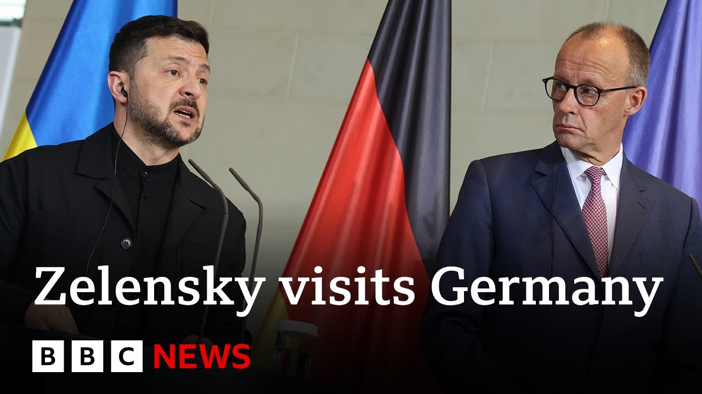

【德国总理承诺帮助乌克兰生产远程导弹 | BBC新闻】
Summary: Ukrainian President Zelensky meets Germany's new Chancellor Mertz in Berlin, discussing peace talks, new sanctions, and Ukraine's right to conduct long-range strikes. Germany pledges funding for Ukrainian-made missiles without range limits, enhancing Ukraine's deep-strike capabilities against Russian targets.
摘要： 乌克兰总统泽连斯基在柏林会见德国新任总理默茨，讨论和平谈判、新制裁及乌克兰远程打击权利。德国承诺为乌克兰制造的无限射程导弹提供资金，增强其对俄目标的纵深打击能力。

⏱️ Estimated Reading Time: 3 min
Let's just remind you of what we've been seeing in Berlin.
让我们回顾一下在柏林的动态。
Uh President Zalinski is there for the first time since Friedrich Mertz became Germany's new chancellor.
呃，泽连斯基总统自弗里德里希·默茨就任德国新总理以来首次到访。
They've just had a press conference which we kept across.
他们刚举行了新闻发布会，我们全程关注。
Uh they talked about uh how uh focusing on further peace talks with Russia was part of their agenda.
呃，他们谈到如何将推进与俄罗斯的和平谈判纳入议程。
New sanctions against Moscow as well and also talk about endorsing Ukraine's right to conduct long range missile strikes into Russian territory that would align Germany with other Western allies but we were looking for some clarification around Germany's Taurus missiles Mikey is still with me heard from Chancellor Mertz he said we are financing Ukrainian made longrange missiles with no range limits Mikey so that suggests that it's not going to be they're not going to just hand over of these tourist missiles.
对莫斯科的新制裁，以及支持乌克兰对俄领土实施远程导弹打击的权利，这将使德国与其他西方盟友保持一致，但我们寻求关于德国金牛座导弹的澄清。米基仍与我一起，听到默茨总理说，我们正为乌克兰制造的无限射程导弹提供资金，米基，这表明他们不会直接移交这些导弹。
Um yeah, there's a lot of sensitivity sensitivity surrounded that.
嗯，是的，此事涉及高度敏感性。
Zalinsky does have a deep strike capability.
泽连斯基确实拥有纵深打击能力。
He's got drones that have been conducting um deep strikes for for a while now.
他拥有无人机，已实施纵深打击一段时间。
He's also got something called Long Neptune um that started off Neptune started off as an anti-shipping missile, but they've they've they've advanced that uh and it's now got a range of about 1,000 km.
他还拥有“长海王星”，最初作为反舰导弹，但经过改进后射程已达约1000公里。
But what Taurus and Storm Shadow give that what Zalinsk's current organic deep strike capability doesn't have is the ability to have this bunker buster effect.
但金牛座和风暴阴影导弹提供的是泽连斯基现有纵深打击能力所不具备的“掩体摧毁”效果。
So what Taurus can do, what Storm Shadow can do is it can it can target hardened facilities, commander control structures for example.
金牛座和风暴阴影导弹能打击加固设施，如指挥控制结构。
So if Zalinsky through this deal manag to manages to get a bunker buster capability, um he will be able to target commander control and logistics resupply, pushing that back further into Russian territory, uh which will made it make it harder for Putin to be able to resupply any infantry movements in the occupied territories, for example.
若泽连斯基通过此协议获得掩体摧毁能力，他将能打击指挥控制和后勤补给，将其推回俄领土深处，使普京更难为占领区的步兵行动补给。
Mikey, thanks so much. do so with us here on BBC News.
米基，非常感谢。请继续关注BBC新闻。